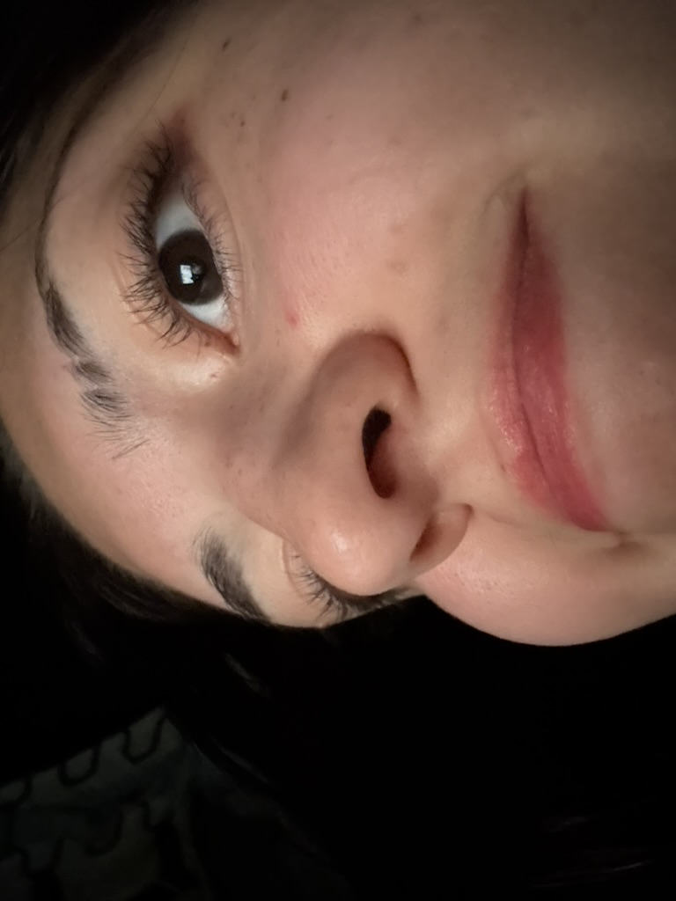
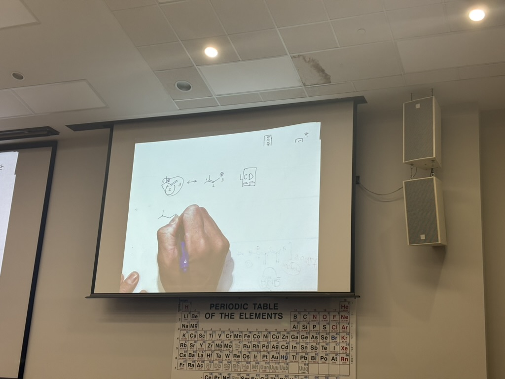
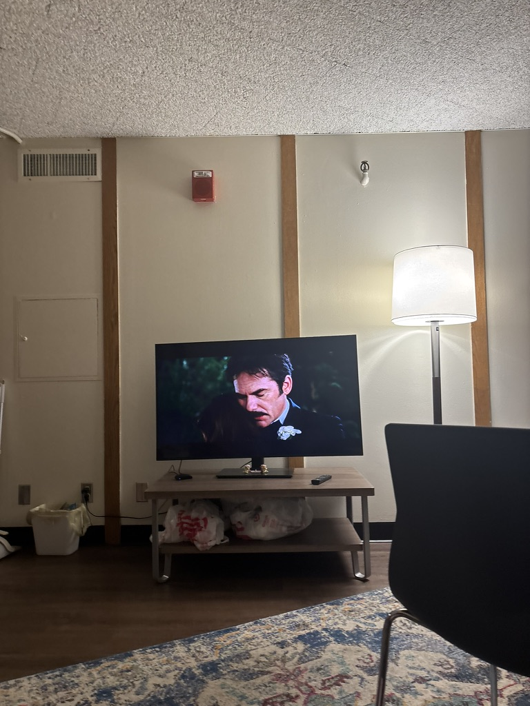
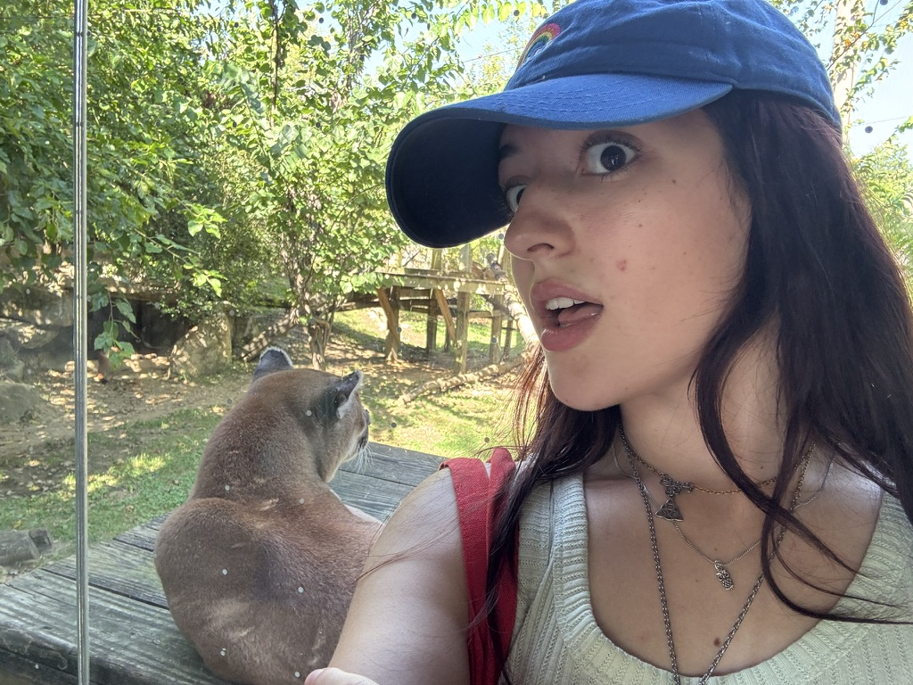
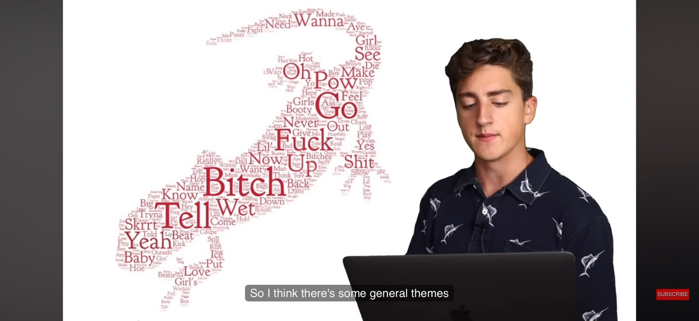

Aug 30 - Sept 5, 2026
Friends and zoos!!
Start of the semester, Violet's recital, the zoo, and a twilight marathon.
So How Was It?
4/5 - Pretty Good

I’ve had lots of fun exploring and making new friends. But, I’m hella tired. I feel like I’m constantly doing stuff and I just want to lay in my bed 💔 I have spent a lot of the week aura farming in the oval, trying to look mysterious while I do work. Unfortunately, I think the fact that I sit weird in chairs takes away from my coolness.
How are my classes?
3/5 - Kind of mid rn

Some of my profs are cool but like half of my classes are these weird seminars and surveys. My bioethics prof plays Marvel Rivals apparently. I did accidentally fall asleep in orgo because I was sick all night. I hope Dr. Chang didn’t see me. Also, RIP to my chai latte that I spilled in gender studies 🕊️ I miss her.
did anything interesting happen???
My friend Violet had her first vocal recital!
She did super awesome, it was the first time I got to go to one of her performances and I had so much fun. She totally vocal mogged everyone else lmao.
Weekly Picks
Watch - Twilight Marathon

We started by saying we would watch one a week, then week finished the whole series in the next few days. It was so much fun I love sharing these movies with people, making fun of all of the characters can really bring a group of people together 🫰
Activity - Columbus Zoo

Me, Violet and Nola went to the zoo on Labor day it was super duper fun. I thought they didn’t have tigers but they didddddd!!!!!! I got to see tons of big cats up close, it was great. We also did a really cute photo booth. The polar bears weren’t out because of the heat but that’s probably for the best.
Screenshot - from a youtube video

This is a screenshot from a YouTube video I watched recently. It was really funny and I thought it was worth sharing.
Your Queer,
Ash Sheehan
Certified Baddie & Diva